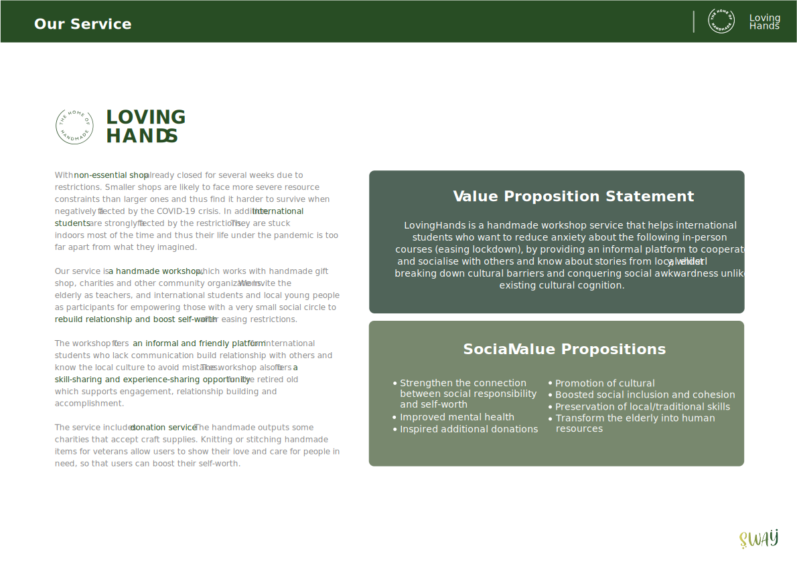
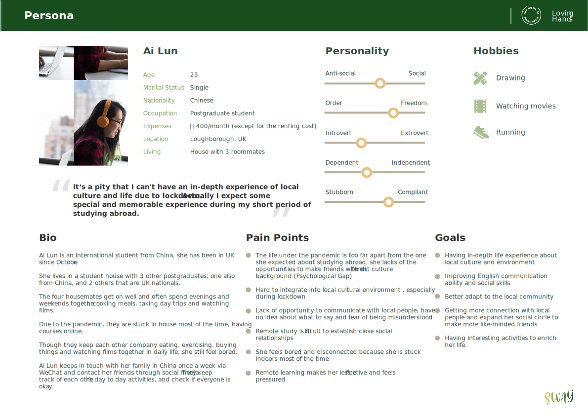
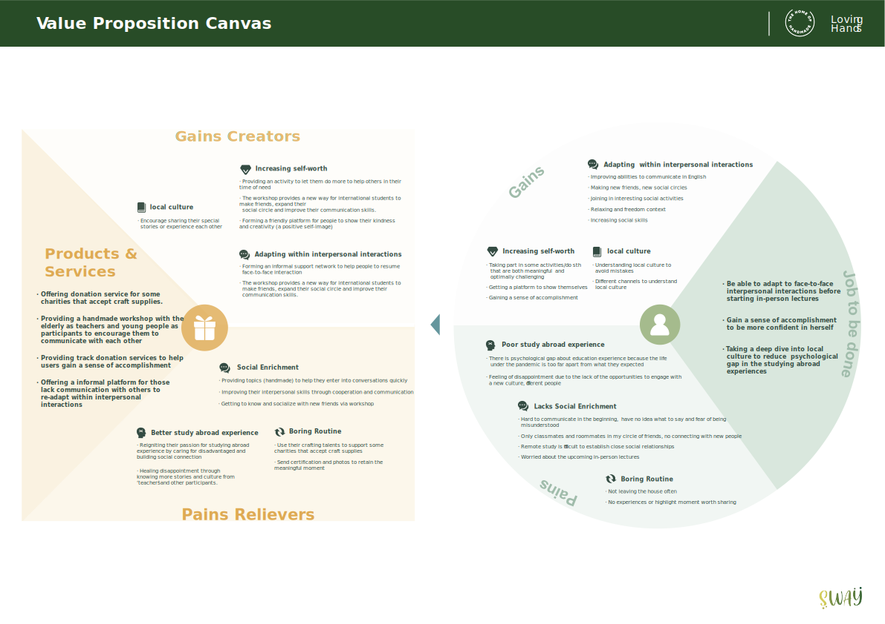
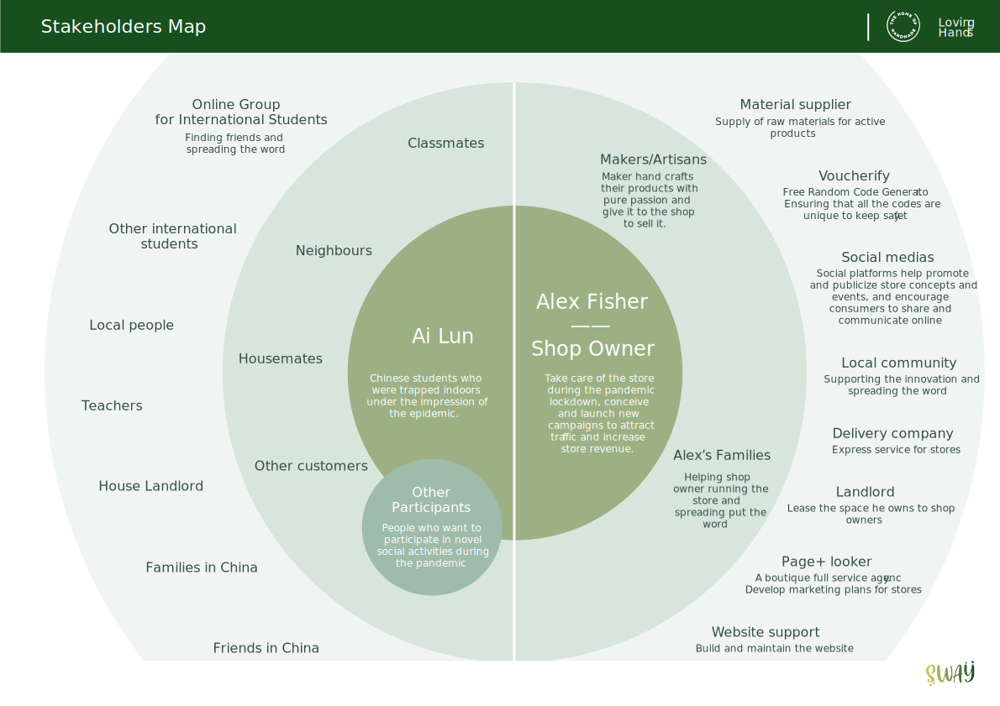
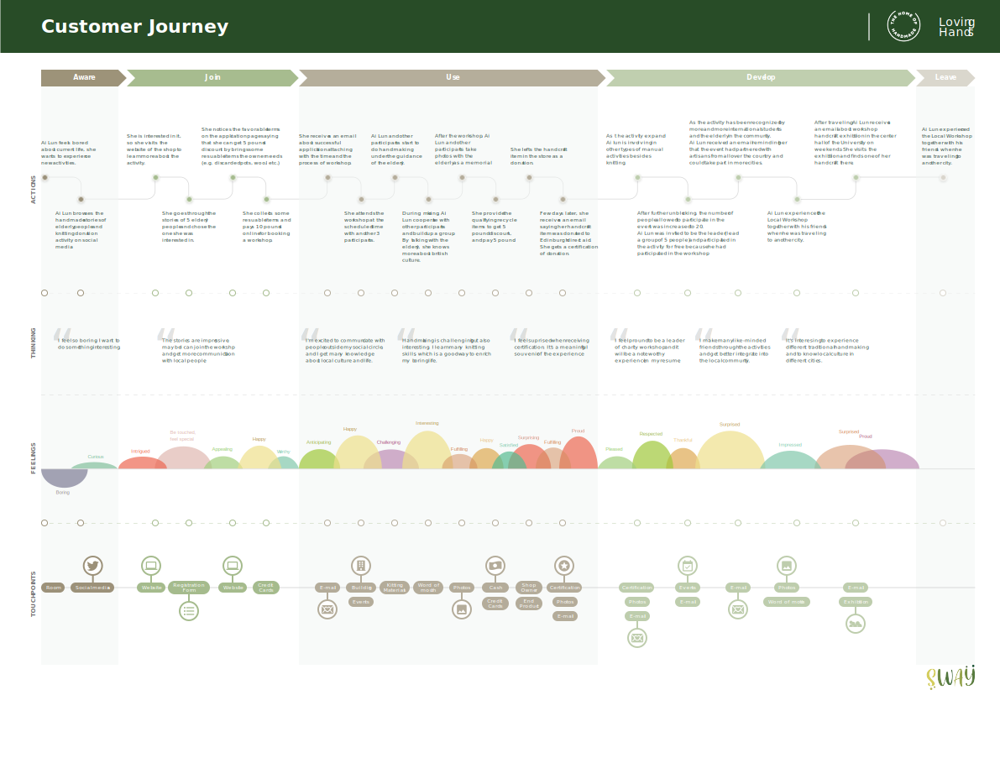
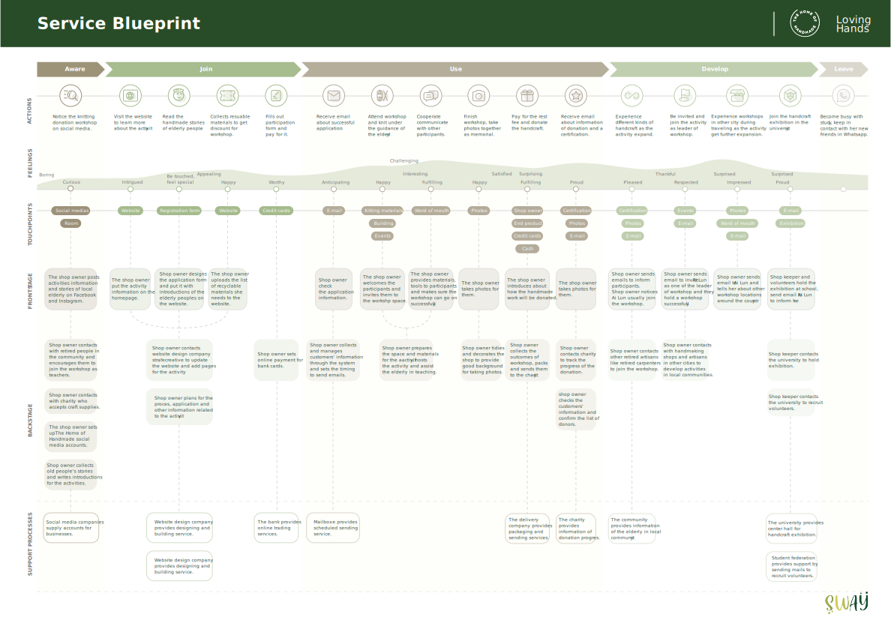
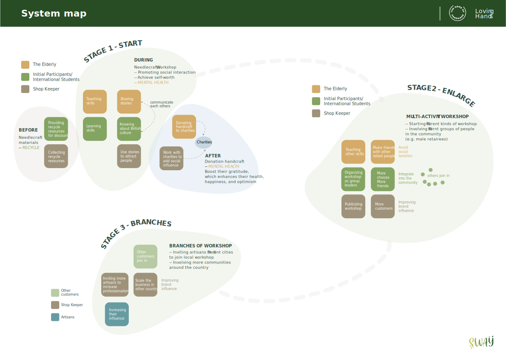
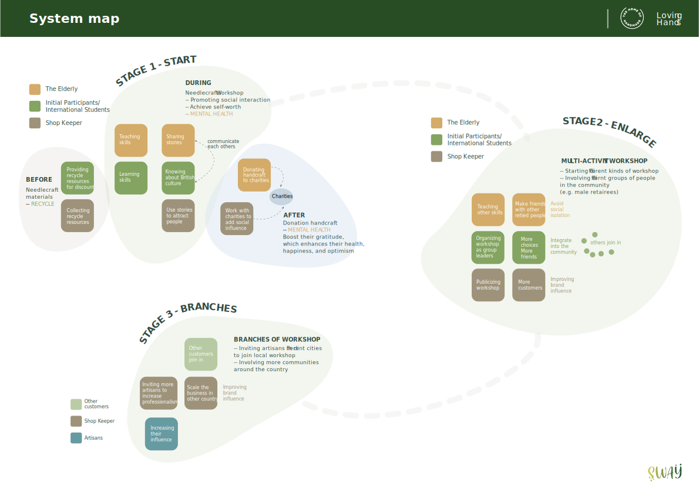
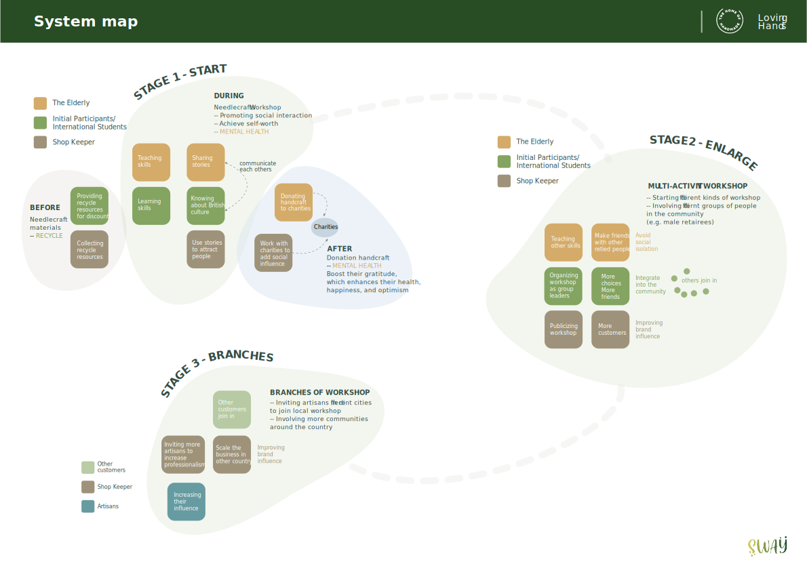

Loving Hands Service Design
时间(Time)：
2021.02-2021.04
角色(Role)：
小组服务设计项目
工具(Tools)：
Miro、XD、PS

疫情影响下，大量商店受到冲击，而由于隔离需要，人们不得不忍受单调封闭的生活。
面对疫情常态化的趋势，该项目通过社会创新设计，探索当地社区的服务转型方案。
背景
Background
受疫情影响，拉夫堡当地社区进入全封闭状态，当地留学生不得不在陌生的环境中自我隔离，而当地的退休老人也由于无法自由外出被困家中。
随着疫情好转，社区由全封闭转为半封闭。
项目借助当地手工商品店The home
of handmade
设计的“Loving hands”服务，
连结当地社区的老人和留学生，帮助半封闭状态下的人们拓展社交圈，促进文化交流。
同时也帮助店铺引流，促进当地经济复苏。







 

